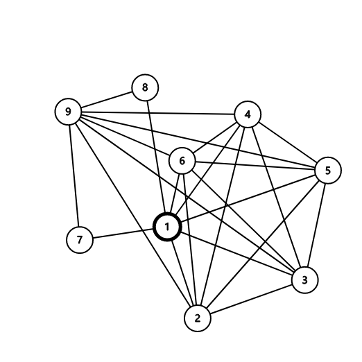

原始题面
题目描述
plain Byteasar intends to throw up a party
Naturally, he would like it to be a success. Furthermore, Byteasar is quite certain that to make it so it suffices if all invited guests know each other. He is currently trying to come up with a list of his friends he would like to invite
Byteasar has friends, where is divisible by 3
plain Fortunately, most of Byteasar’s friends know one another
Furthermore, Byteasar recalls that he once attended a party where there were of his friends, and where everyone knew everyone else
Unfortunately, Byteasar does not quite remember anything else from that party
In particular, he has no idea which of his friends attended it
Byteasar does not feel obliged to throw a huge party, but he would like to invite at least \frac{n}{3} of his friends
He has no idea how to choose them, so he asks you for help
输入输出格式
输入格式
In the first line of the standard input two integers, and (, ), are given,separated by a single space. These denote the number of Byteasar’s friends and the number of pairs of his friends who know each other, respectively
Byteasar’s friends are numbered from 1 to
Each of the following lines holds two integers separated by a single space
The numbers in line no. (for ) are and (), separated by a single space, which denote that the persons and know each other. Every pair of numbers appears at most once on the input
输出格式
In the first and only line of the standard output your program should print numbers, separated by single spaces, in increasing order. These number should specify the numbers of Byteasar’s friends whom he should invite to the party. As there are multiple solutions, pick one arbitrarily
输入输出样例
输入样例 #1
6 10
2 5
1 4
1 5
2 4
1 3
4 5
4 6
3 5
3 4
3 6
输出样例 #1
2 4
题意简述
给定一张n个点m条边的图, 保证存在一个大小为的团, 要求输出一个大小为的团
解题思路
讲一个比较另类的做法
我们发现如果团内每个点的度往往都大于不在团内每个点的度
所以我们自然想到把所有点按度降序排个序然后取前个输出
但是这样是有反例的
我们可以构造这样的图
9 24 1 3 1 5 1 6 2 5 2 6 3 4 3 5 5 6 2 1 2 3 6 3 4 1 2 4 4 5 4 6 7 9 8 9 9 3 9 2 9 5 9 4 9 6 1 7 1 8画出来是这样的:

我们发现和的度是, 和的度是, 其余点的度是
按这样的做法就会输出
1 x 9其中
而和没有边, 所以这是错误答案
我们观察这个反例可以发现如果我们把取点策略换成: 在前个点里随机取的点, 就有很大概率正确
所以我们搞个Las Vegas随机就好了(本篇题解只是单纯的单次shuffle, 并没有加Las Vegas随机)
而且时间复杂度主要在排序上, 也就是, 这是比正解快的
代码参考
Show code
1 |
|